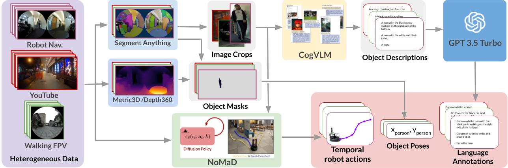

We present a system for training long-horizon end-to-end navigation policies capable of generalizing to deployment in highly diverse outdoor and indoor environments. The result is a single end-to-end policy capable of navigation on the scale of hundreds of meters, while generalizing to a broad distribution of unstructured environments. To accomplish this, we must make use of every source of data available. While previous efforts to train general navigation policies typically rely on centralized researcher-collected datasets, such data is fundamentally high-quality but limited in scale. We thus turn to crowd-sourced data, which is readily available in large quantities but is relatively low-quality. To address this, we train a simple, short-horizon ``reannotation'' policy, optionally taking advantage of actions from the high-quality dataset, and use this to relabel the low-quality dataset with near-expert actions connecting short-horizon sequences of states. The result is LogoNav, a state-of-the-art general navigation policy capable of navigating over long horizons in complex outdoor environments. We test LogoNav's generalization capabilities by evaluating performance in six countries around the world and find it to be a highly capable navigator.
We propose a novel method that leverages foundation models to label in-the-wild video data for training a language-conditioned navigation policy. Following figure shows the overview of our data augmentation approach. Our method is (i) scalable, as it uses abundant and readily available action-free data sources, (ii) efficient, as it leverages all captured objects in the image view during data augmentation, and (iii) generalizable, as it distils state-of-the-art large vision and language models to diverse and semantically meaningful annotations.
We use a wide variety of egocentric datasets to train on, including: 1) Indoor Navigation Dataset: image observations from mobile robot trajectories in office building environments (see GO Stanford2, GO Stanford4 and HuRoN(SACSoN) Dataset), 2) \bf YouTube Tour Dataset: YouTube video data of tours in indoor and outdoor environments, and 3) Human-walking Dataset: data collected from walking with a camera in an indoor home setting and outdoor city environments.
We train the language-conditioned navigation policy after annotating the in-the-wild videos. Our cost function includes three objectives for 1) target object reaching, 2) collision avoidance, and 3) velocity smoothness. Please see the details on our manuscript and the released codes.
We evaluate our trained policy on target object navigation, which tasks the robot with navigating toward a visible target object from the current robot pose, in the various natural environments, which is not seen in the training datasets.
Our method can show the robustness for the noisy instructions, which partially includes wrong words.
Due to the fast calculation of our relatively small-size policy on the robot edge controller, our method allows us to follow the dynamic target objects, such as pedestrians.
Given that our proposed method leverages in-the-wild videos recorded by a variety of cameras at different poses for training, it is inherently capable of generalizing to different embodiments. To rigorously evaluate our policies' cross-embodiment capabilities, we test our policy on the three different robot setups, 1) quadruped robot, GO1 with PCB-mounted fisheye camera, 2) same mobile robot with different cameras such as Intel Realsense D435i, PCB-mounted fisheye camera, and Ricoh Theta S.
By distilling the navigation foundation model, NoMaD, our policy enables the robots to avoid the collision for the obstacles between the target object and the initial robot location.
Even when there are objects in the same type as the target object, our method distinguishes them from the prompts and allows navigation toward the correct target objects,
We can use the LeLaN to move toward the far target object, which is not seen in the current observation. We leverage the topological memory (stack of pre-collected images) to look for the target object and indentify the target node. At first stage (graph navigation phase), we navigate the robot to the target node location by vision-based navigation with the topological memory. When arrving at the target node, we switch the policy to the LeLan and navigate toward the target object location (final approach phase). In our implementation, we use the ViNT in the first graph navigation phase.
@inproceedings{hirose24lelan,
title={LeLaN: Learning A Language-conditioned Navigation Policy from In-the-Wild Video},
author={Noriaki Hirose and Catherine Glossop and Ajay Sridhar and Dhruv Shah and Oier Mees and Sergey Levine},
booktitle={Conference on Robot Learning},
year={2024}
}